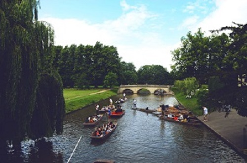

RIVER PEOPLE COMPANY
WHICH ADVENTURE IS RIGHT FOR YOU?
CLASSIC RIVERS
Without any doubt these are the top classic river trips in the world, indeed some of the top adventure trips in the world. They offer a mixture of world-class white water, picturesque sandy beaches, incredible culture, and a chance for afternoon exploration. Every one of these places is unique due to the fantastic white water,incredible surroundings and unique cultures.Often these classic rafting vacations feature more days on the river to allow you to truly explore the destination,unplug from everyday life and truly relax.If you enjoy ticking off the classic adventures that the world has to offer, then you must put these on your list.
FAMILY RAFTING ADVENTURES
River trips aren’t just for big kids. We also have the ideal, safe adventure for you and your family, with a range of destinations depending on the age of your children. We will expose your children to the fun of camping, the outdoors and give them an insight into foreign cultures. Take a step away from tablets and technology and see just how special a trip can be bonding on the river. You’ll get a chance to relax as well as the kids naturally gravitate towards the guides, helping them to rig boats and even do dishes!
WE ARE YOU BEST OPTION
Our rafting trips aren’t just about fun, excitement and the adventure of white water rafting. You will experience the best white water rivers in the world (most scenic, most exciting, or both) as well as “5 star” campsites (or we prefer to say “one million stars”) delicious food accompanied by apres-rafting drinks, and entertaining professional raft guides.